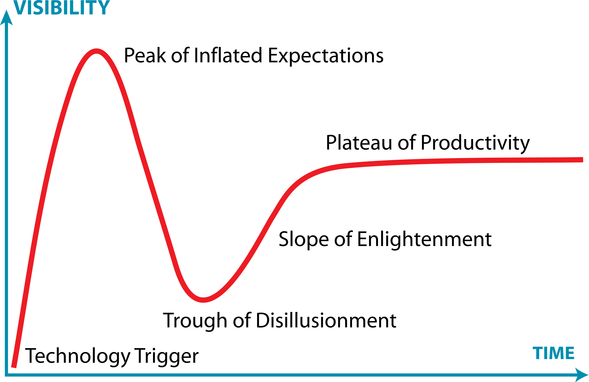
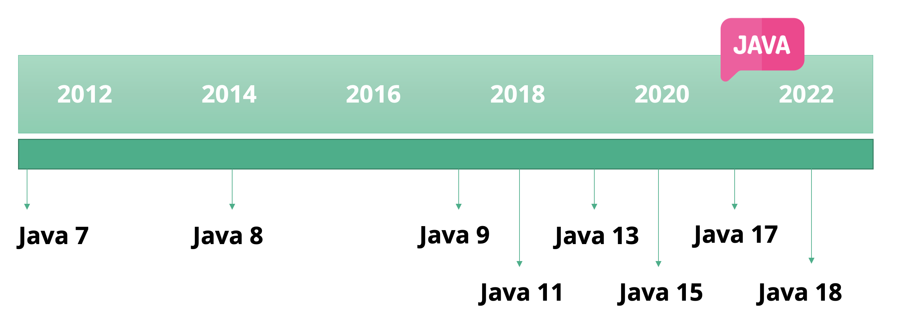
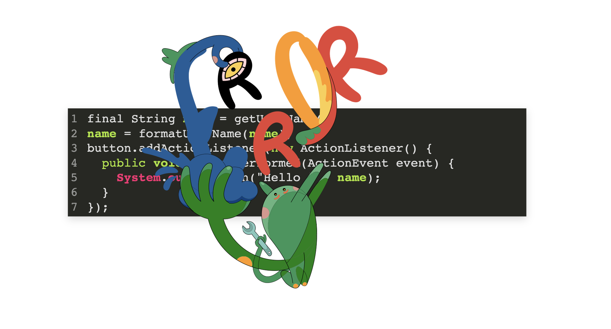
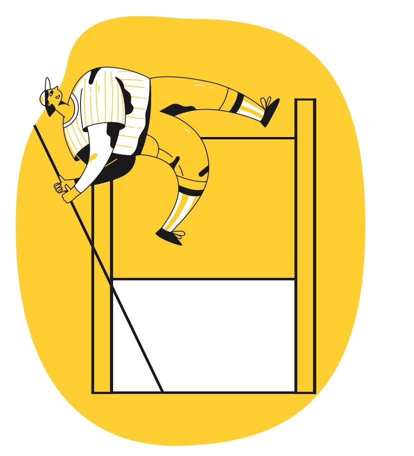

Kiedyś to było...
Gartner hype cycle
JAVA Releases
Programowanie funkcyjne
“In computer science, functional programming is a programming paradigm where programs are constructed by applying and composing functions. (...) ”
...clean code
Wyrażenia Lambda
“ A lambda expression is a short block of code which takes in parameters and returns a value. ”
Stary styl
button.addActionListener(new ActionListener() {
public void actionPerformed(ActionEvent event) {
System.out.println("button clicked");
}
});
...z Lambdą
button.addActionListener(event -> {
System.out.println("button clicked");
});
...z Lambdą
button.addActionListener(() -> System.out.println("button clicked"));
Rózne zapisy Lambdy
Runnable noArgs = () -> System.out.println("Hello");
ActionListener oneArg = e -> System.out.println("click");
Runnable multiStatement = () -> {
System.out.print("Hello");
System.out.println(" World");
};
Rózne zapisy Lambdy cz. 2
BinaryOperator< Long > add = (x, y) -> x + y;
BinaryOperator< Long > addExp = (Long x, Long y) -> x + y;
Zmienne wewnątrz lambd
final String name = getUserName();
name = formatUserName(name);
button.addActionListener(new ActionListener() {
public void actionPerformed(ActionEvent event) {
System.out.println("Hello " + name);
}
});
Zmienne wewnątrz lambd
 *przykładInterfejsy funkcyjne
Interfejs funkcyjny
Zadna magia, juz to znamy!
//ActionListener, Runnable...
public interface ActionListener extends EventListener {
public void actionPerformed(ActionEvent event);
}
Interfejs funkcyjny
| Nazwa Interfejsu | Typ | Przykład |
|---|---|---|
| Runnable | → | Wykonanie wątku |
| Predicate | T → boolean | Wartoś true/false |
| Consumer | T → | Pobieramy wartość, nic nie zwracamy (Print) |
| Function< T, R > | T → R | Pobieramy wartość, zwracamy wartość |
| Supplier | → T | Zwracamy wartość. (Fabryka) |
| UnaryOperator | T → T | Logina negacja (!) |
| BinaryOperator | T, T → R | Operacje matematyczne. |
Typy danych
Kolekcje, generyki
useHashmap(new HashMap<>());
// ...
private void useHashmap(Map< String, String > values);
Interfejsy funkcyjne
Predicate< Integer > greaterThan5 = x -> x > 5;
// ...
public interface Predicate< T > {
boolean test(T t);
}
Streams
Iteracje
- Pętle (for, while)
- Iterator [external iteration] (while, hasNext, next)
- Streamy [internal iteration]
Lazy / Eager
Metody budujące stream są typu lazy.
Kolektory są typami eager.
Operacje na streamach
* przykład: StreamInitialExample
- collect(toList())
- map
- filter
- flatMap
- flatMap
- max and min
- reduce
Higher order functions
Higher order functions
To funkcje, które przyjmują jako argumenty inne funkcje, lub zwracają inne funkcje.
Właściwie wszystkie poprzednie funkcje nimi są.
Czy temat został wyczerpany?
@FunctionalInterface
Jeśli NAPRAWDĘ jesteśmy przekonani, ze to będzie functional interface, dodajmy adnotację.
Optionals
Optional< String > a = Optional.of("ABC");
Optional emptyOptional = Optional.empty();
Optional alsoEmpty = Optional.ofNullable(null);
assertFalse(emptyOptional.isPresent());
assertTrue(a.isPresent());
Testowanie, debugowanie...
Zalety lambd i streamów?
...clean code
Co dalej?

Link do zadania